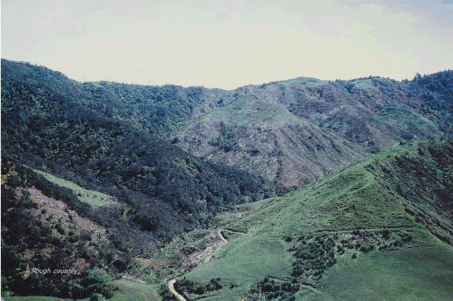

About
I am a Research Fellow with the Systems Biology Laboratory at the Where I grew up: Taranaki in New Zealand. About halfway between Toko and Whangamomona; out back of the Matemateaonga Ranges University of Melbourne.
My research focuses on developing conceptual frameworks and computational tools, and applying network modelling and analysis methods to infer regulatory networks in biological systems with a general focus on cancer and other human diseases. To do this, we use genomic, transcriptomic, proteomic and metabolomic data, as well as literature analysis and text mining techniques.
I am also interested in research reproducibility: how we verify published results in the computational life sciences, and make sure they can be reproduced independent of time, space and environment.